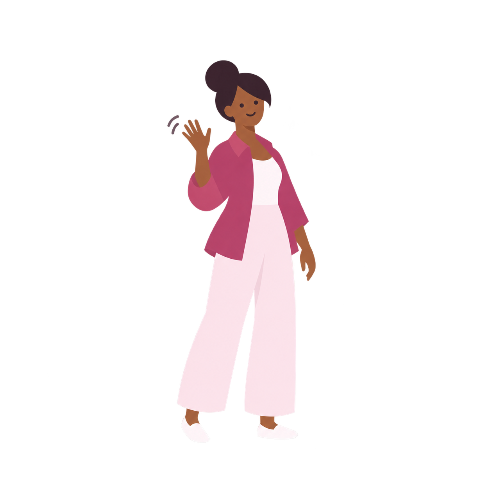
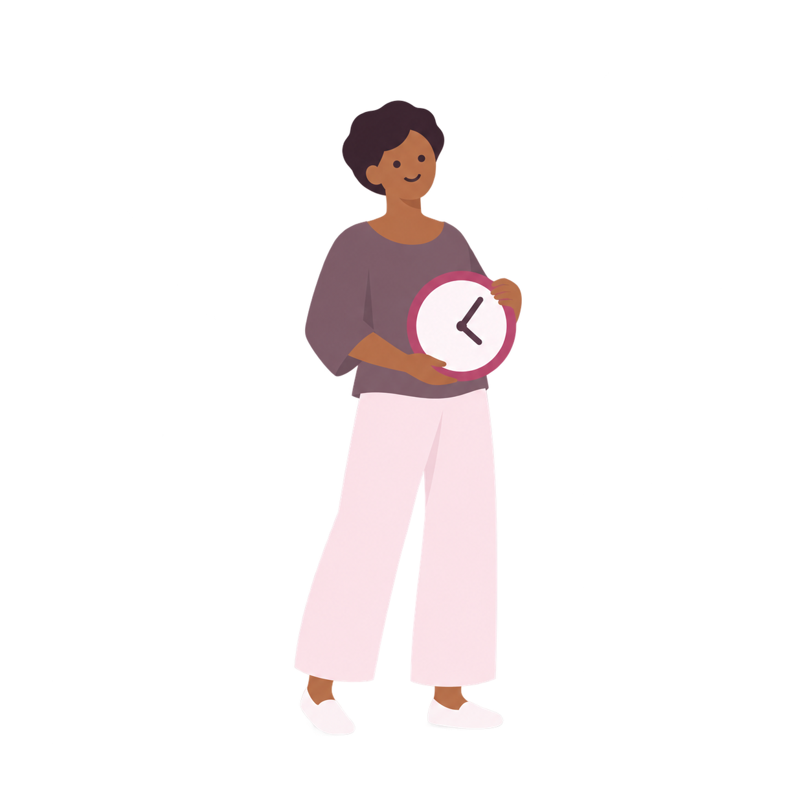
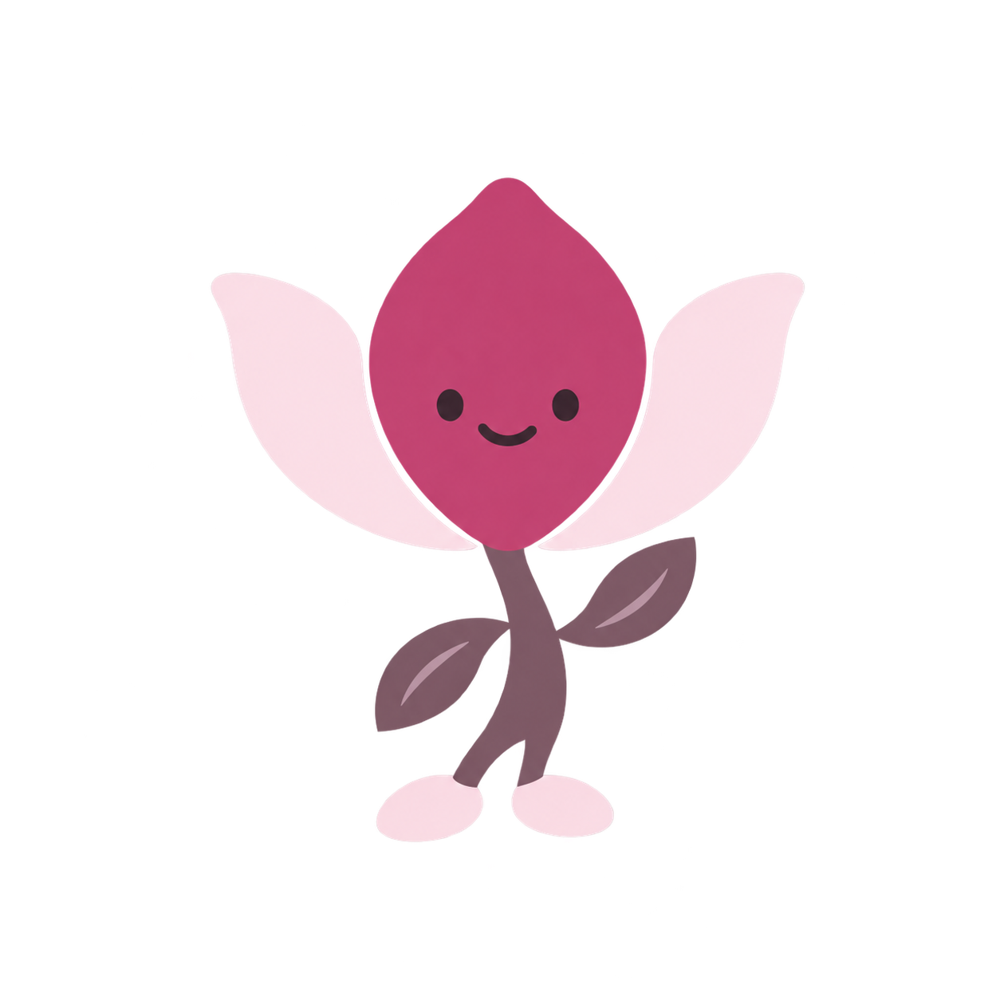
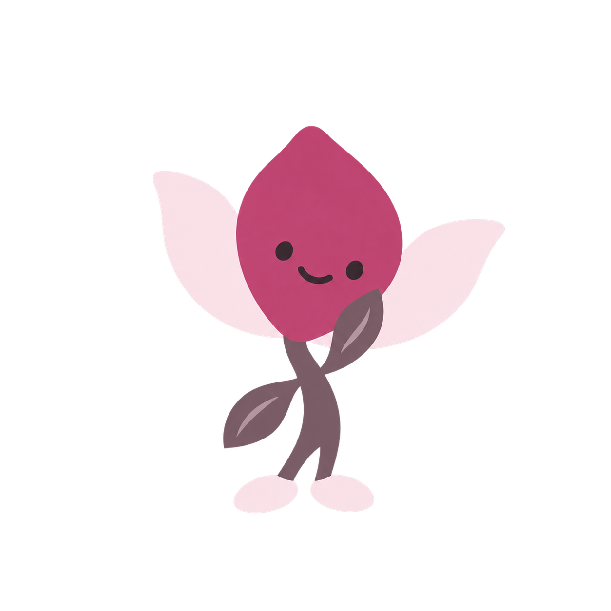
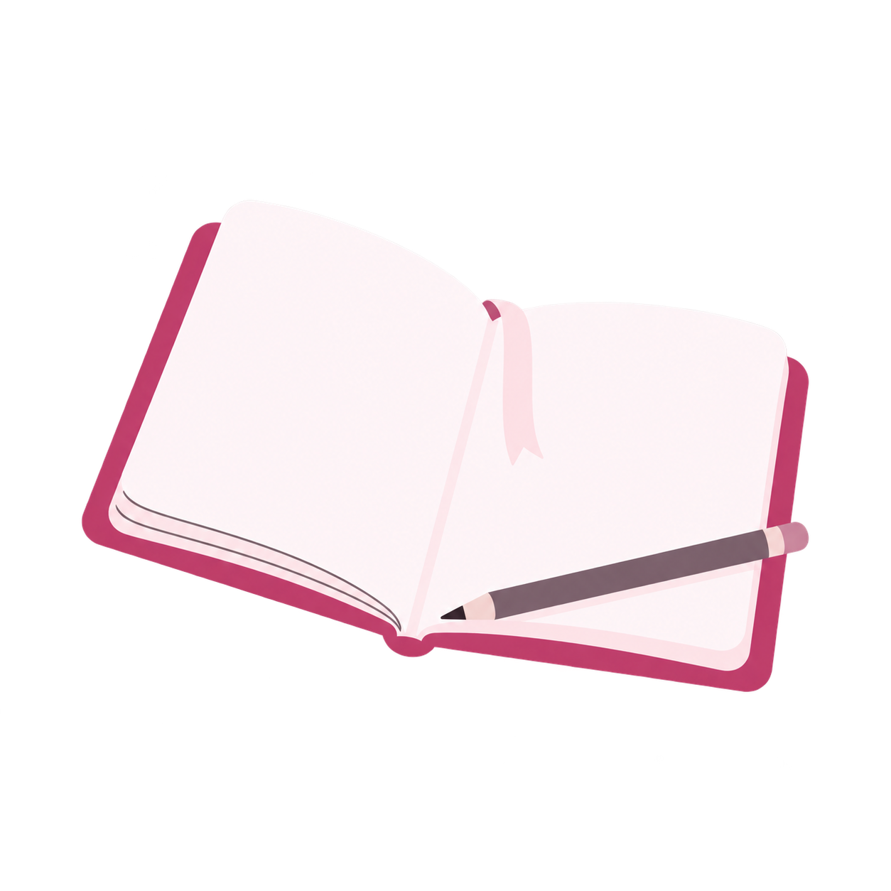
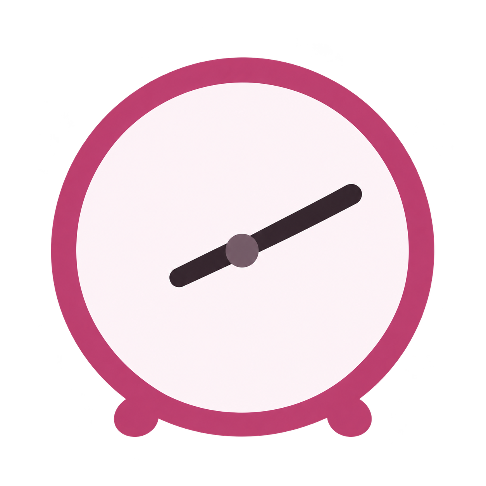
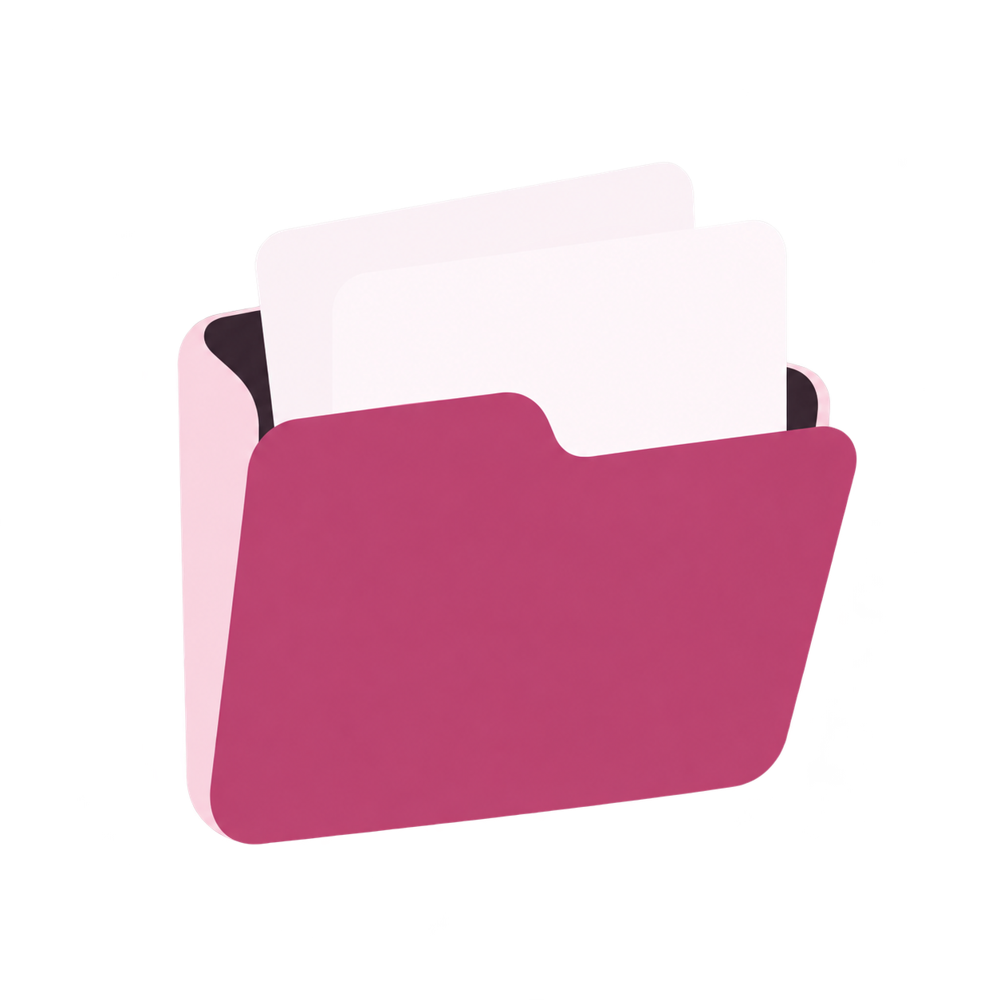
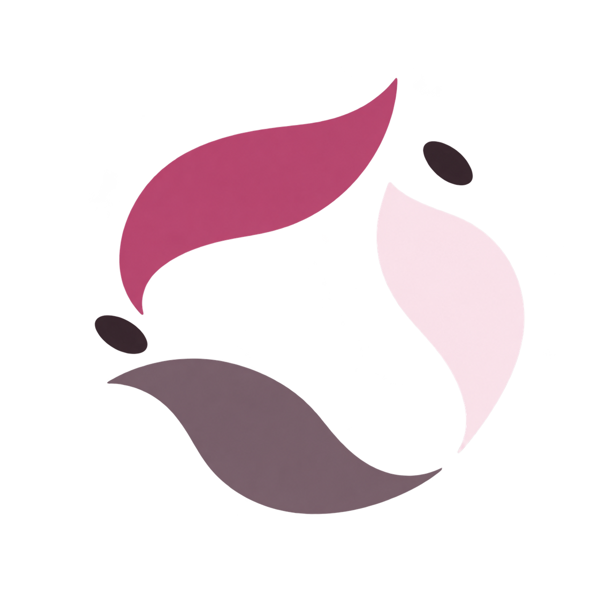
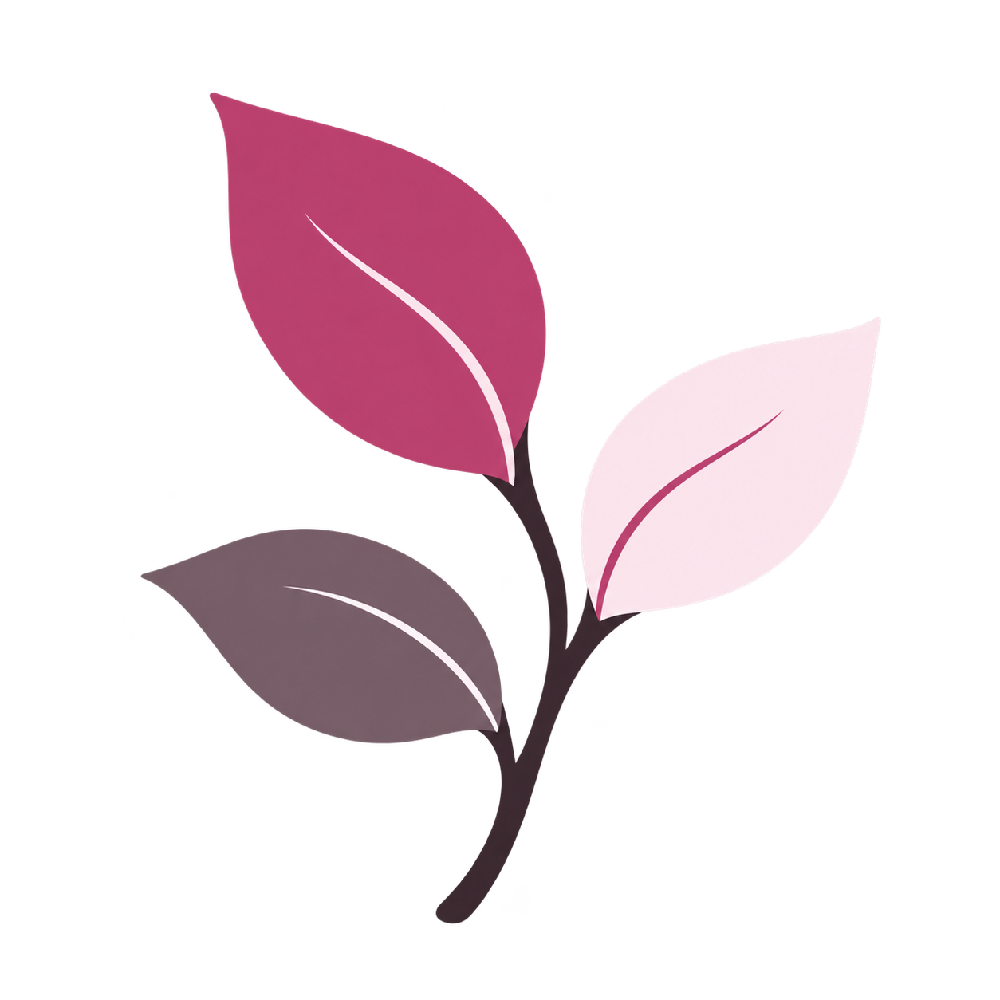
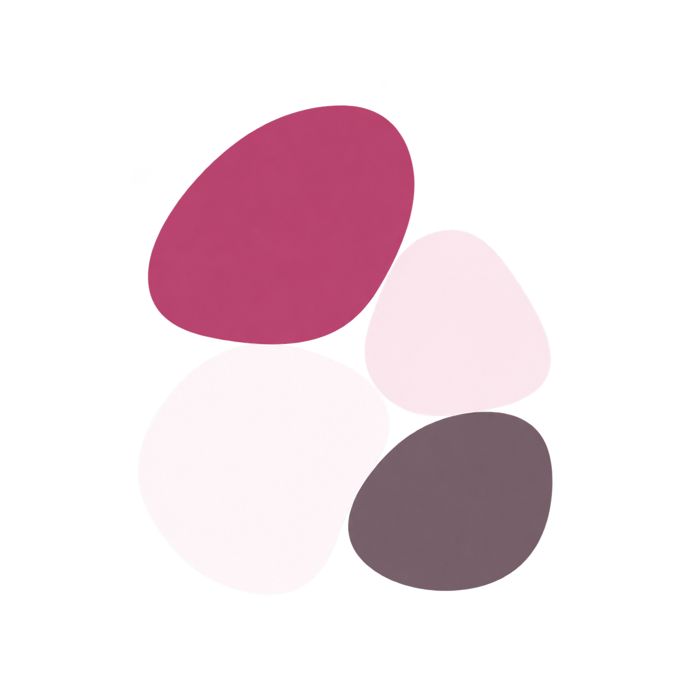

PETAL / ILLUSTRATION STUDY
Petal, illustrated.
16 original illustrations for the moments around the core flow. Adult characters, a blossom companion proposal, everyday objects, and abstract forms.
Design proposals · flat editorial direction · separate transparent assets
16 illustrations · all families
Characters

A gentle hello
An adult woman with a rose overshirt and blush trousers giving a small wave.
character-welcome ↗1254 × 1254 · transparent PNG · proposal
Room to write
An adult with rounded curly hair seated on a blush stool, writing in an open journal.
character-journaling ↗1254 × 1254 · transparent PNG · proposal
A moment to think
A tan-skinned adult with a plum bob seated thoughtfully, with an open relaxed posture.
character-reflecting ↗1254 × 1254 · transparent PNG · proposal
Take a closer look
An adult with shoulder-length wavy hair reading a blank open book.
character-reading ↗1254 × 1254 · transparent PNG · proposal

At your own pace
A short-haired adult holding a simple round clock with an understated smile.
character-reminders ↗1254 × 1254 · transparent PNG · proposal
Keep things together
An adult with a long plum braid holding a simple rose folder.
character-organizing ↗1254 × 1254 · transparent PNG · proposal
Blossom companion

Blossom says hello
An original three-petal blossom companion with tiny eyes and one leaf arm raised.
companion-hello ↗1254 × 1254 · transparent PNG · proposal

Blossom takes a moment
The same blossom companion with a gentle head tilt and a leaf arm beside its face.
companion-thinking ↗1254 × 1254 · transparent PNG · proposal
Everyday objects

Open journal
A rose-covered journal with blank soft-white pages and a simple pencil.
object-journal ↗1254 × 1254 · transparent PNG · proposal
Blank calendar
A rounded calendar with rose header, blank blush panels, and plum binding loops.
object-calendar ↗1254 × 1254 · transparent PNG · proposal

Quiet clock
A simple rose clock with two plum hands and no numbers.
object-clock ↗1254 × 1254 · transparent PNG · proposal

Personal folder
A blush folder holding two blank soft-white sheets, with a rose front panel.
object-folder ↗1254 × 1254 · transparent PNG · proposal
Abstract compositions

Petal orbit
An open ring of three large rose and blush soft petal shapes with two tiny plum oval accents; decorative, without diagram meaning.
abstract-petal-orbit ↗1254 × 1254 · transparent PNG · proposal
Ribbon loop
A single loose rose ribbon with a blush reverse, forming a relaxed open loop.
abstract-ribbon-loop ↗1254 × 1254 · transparent PNG · proposal

Leaf cluster
Three rounded rose, blush, and muted-plum leaves branching from one plum stem.
abstract-leaf-cluster ↗1254 × 1254 · transparent PNG · proposal

Pebble stack
Four soft geometric forms in a balanced rose-and-plum composition.
abstract-pebble-stack ↗1254 × 1254 · transparent PNG · proposal